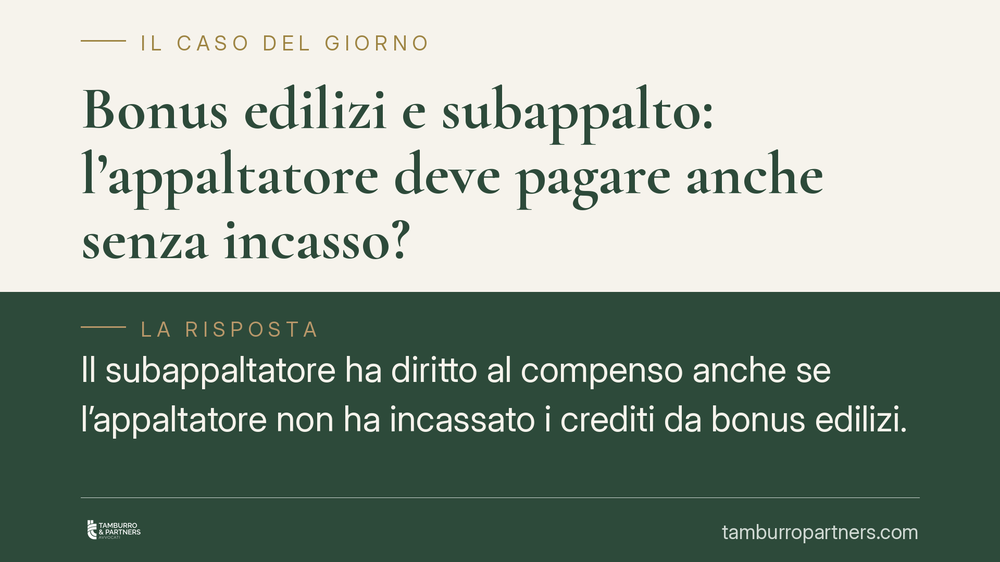

Bonus edilizi e subappalto: l'appaltatore deve pagare anche senza incasso?
Il subappaltatore ha diritto al compenso anche se l'appaltatore non ha incassato i crediti da bonus edilizi. Il mancato realizzo della cessione non è impossibilità sopravvenuta: le obbligazioni di denaro non si estinguono per difficoltà di approvvigionamento. Tutto cambia, però, se il contratto subordina espressamente il pagamento alla monetizzazione del credito. La distinzione pesa sui cantieri ancora aperti.

Il caso
Un tema ricorrente nei cantieri legati a Superbonus e detrazioni edilizie: l'appaltatore cede i crediti d'imposta ma non riesce a monetizzarli, per blocco delle cessioni o capienza esaurita. Nel frattempo il subappaltatore ha eseguito la propria parte e chiede di essere pagato. L'appaltatore si difende sostenendo che, senza incasso del bonus, il pagamento sarebbe divenuto impossibile.
La giurisprudenza di merito ha affrontato più volte la questione in senso coerente: il mancato realizzo del credito fiscale non esonera chi deve pagare. Vediamo perché.
Inquadramento normativo
Il punto di partenza è l'art. 1256 del Codice civile, che disciplina l'estinzione dell'obbligazione per impossibilità sopravvenuta: l'obbligazione si estingue solo quando la prestazione diventa impossibile per una causa non imputabile al debitore.
Questa norma, però, non si applica alle obbligazioni pecuniarie, cioè alle obbligazioni che hanno per oggetto una somma di denaro. Vale il principio, costante nell'orientamento di legittimità, per cui il denaro è un bene generico e il genere non perisce mai (il noto brocardo *genus numquam perit*). Chi deve pagare una somma non può liberarsi invocando la propria difficoltà economica o il mancato incasso di crediti attesi da terzi: la scarsità di liquidità è un rischio che resta a carico del debitore.
Il mancato incasso del bonus edilizio, dunque, non è impossibilità della prestazione. È un problema di provvista finanziaria dell'appaltatore, che non si riflette automaticamente sul subappaltatore.
La differenza che decide tutto: "se" o "quando"
Il risultato si ribalta solo in presenza di una clausola contrattuale chiara. Qui la distinzione tecnica è decisiva.
Una clausola può operare come condizione sospensiva: il pagamento è dovuto *se* e nella misura in cui l'appaltatore incassa il credito. In questo caso il mancato incasso impedisce al diritto di sorgere, e il subappaltatore sopporta il rischio del bonus.
Una clausola può invece limitarsi a fissare un termine di pagamento: il compenso è dovuto comunque, ma viene corrisposto *quando* avviene l'incasso. Qui il pagamento è solo differito nel tempo; se l'incasso non arriva entro un tempo ragionevole, il credito diventa comunque esigibile.
In pratica: la condizione risponde alla domanda "il pagamento è dovuto?"; il termine risponde alla domanda "quando è dovuto?". Clausole ambigue, redatte senza questa consapevolezza, vengono interpretate dal giudice e spesso lette come semplice differimento, a tutela del subappaltatore.
Implicazioni pratiche
Per l'appaltatore, la lezione è netta: senza una clausola che subordini espressamente il pagamento alla cessione del credito, il rischio del mancato incasso resta integralmente suo. Ha pagato il subappaltatore ma non ha monetizzato il bonus? La perdita è a suo carico.
Per il subappaltatore, il messaggio è rassicurante ma non assoluto: il credito per l'opera eseguita è tutelato, salvo che abbia sottoscritto una clausola di condizionamento valida ed esplicita.
Attenzione, inoltre, ai limiti di validità delle clausole troppo sbilanciate. Una pattuizione che scarichi integralmente sul subappaltatore il rischio fiscale, senza contropartita, può essere sindacata sotto il profilo della buona fede contrattuale e della meritevolezza dell'interesse. Scrivere "paghi solo se incassi" non basta se l'assetto complessivo risulta manifestamente iniquo.
Cosa fare in concreto
Se sei l'appaltatore:
- Inserisci nei contratti di subappalto una clausola esplicita che qualifichi il meccanismo: se vuoi trasferire il rischio bonus, scrivi una condizione sospensiva chiara, non un generico rinvio all'incasso.
- Verifica la coerenza con i contratti a monte: il rischio che accetti verso il committente deve potersi ribaltare, nei limiti di legge, verso i subappaltatori.
- Non confidare su clausole ambigue: in caso di dubbio il giudice tende a leggerle come semplice differimento del pagamento.
Se sei il subappaltatore:
- Prima di firmare, fai qualificare la clausola di pagamento: distingui tra "se incassa" e "quando incassa", perché cambia radicalmente la tua posizione.
- Pretendi un termine massimo oltre il quale il credito diventa comunque esigibile, anche in assenza di incasso del bonus.
Consigliamo in ogni caso una revisione preventiva dei testi contrattuali: la maggior parte del contenzioso nasce da clausole scritte senza distinguere condizione e termine.
FAQ
Il mancato incasso del bonus libera l'appaltatore? No, non di per sé: l'obbligazione di pagare denaro non si estingue per impossibilità sopravvenuta.
Quando il subappaltatore sopporta il rischio? Solo se ha accettato una clausola che condiziona espressamente e in modo valido il pagamento alla cessione del credito.
Disclaimer
Contributo informativo a cura di Tamburro & Partners - Avv. Giuseppe Tamburro. Non costituisce parere legale.
Ogni contratto ha il suo equilibrio.
Se vuoi una revisione delle clausole o una redazione su misura, scrivi allo studio. Ti rispondiamo entro un giorno lavorativo.